|
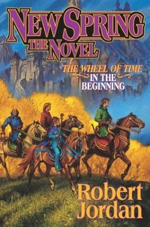
|
0. New Spring |
6 January 2004 |
New Spring describes events which take place twenty years before the events of The Eye of the World (Book 1). The story begins in the last days of the Aiel War, and the Battle of the Shining Walls around Tar Valon. It is
set primarily in Tar Valon and the Borderlands, specifically Kandor. New Spring focuses mainly on Moiraine Damodred and Siuan Sanche, two Aes Sedai new to the sisterhood, and how a young Moiraine became Aes Sedai, met
Lan Mandragoran and made him her Warder. The novel also explains how Moiraine and Siuan witnessed a prophecy of the Dragon's rebirth and came to begin investigating the Karaethon Cycle, the Prophecies of the Dragon,
decades before discovering Rand al'Thor.
|
|
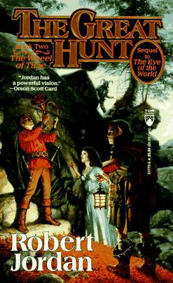
|
2. The Great Hunt |
November 15, 1990 |
The story features young heroes Rand al'Thor, Mat Cauthon, and Perrin Aybara, who join Shienaren soldiers in a quest to retrieve the Horn of Valere. At the same time, Egwene al'Vere, Nynaeve al'Meara, and Elayne Trakand
go to the White Tower in Tar Valon to learn Aes Sedai ways. Finally, an exotic army invades the western coast.
|
|
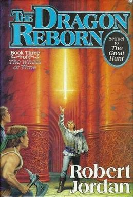
|
3. The Dragon Reborn |
October 15, 1991 |
Jordan continues his Wheel of Time saga (after The Eye of the World and The Great Hunt ). Three thousand years ago the Dragon led the male mages of the world into entrapping the Dark One, but the cost was high: all male
mages, then and thereafter, were driven mad. Now the Dark One is breaking free, and the only salvation may come through Rand al'Thor who may be a reincarnation of the Dragon and who must obtain the sword Callandor,
held in the city of Tear. All of Rand's companions from the previous books find themselves, willing or not, moving toward Tear for a confrontation with evil traps. Jordan's fast and absorbing adventure novel will keep
the reader too entranced to worry about plot inconsistencies, numerous coincidences, lack of character development and Rand's inexplicably infrequent appearances. As light fantasy, however, it proves an enjoyable diversion.
|

|
4. The Shadow Rising |
September 15, 1992 |
At the beginning of the book, Rand al'Thor has just claimed the crystal sword Callandor to prove himself the Dragon Reborn. He is approached by Lanfear; and the fortress 'Stone of Tear' is stormed by Trollocs and Fades,
sent by another Forsaken (Sammael), while a third, Semirhage, sends her followers into the Stone, to oppose Sammael's forces. In defense, Rand uses Callandor to create a lightning storm killing all the Trollocs and
Fades. Rand then departs for the Aiel Waste, to which Egwene al'Vere and Moiraine Damodred accompany him. Mat Cauthon, counseled by the Stone of Tear's Aelfinn ter'angreal, follows Rand. Perrin Aybara, after hearing
of trouble in Two Rivers, his native region, returns thereto, accompanied by Faile Bashere. Elayne Trakand, Nynaeve al'Meara, and Thom Merrilin depart to Tarabon to hunt the Black Ajah, while Min Farshaw arrives in
Tar Valon to report to the Amyrlin Siuan Sanche. Thus, The Shadow Rising follows four groups of characters in four plotlines. |
|
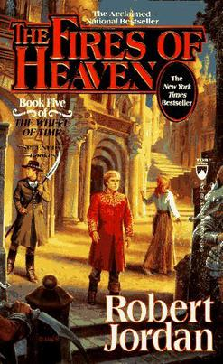
|
5. The Fires of Heaven |
October 15, 1993 |
Chasing the Shaido Aiel, who are pillaging Cairhien, Rand al'Thor, titled Dragon Reborn and Car'a'carn, leads his Aiel to the Second Battle of Cairhien. Mat Cauthon saves some troops from a Shaido ambush; wins numerous
battles, relying on the memories of past generals, transferred telepathically to himself; and personally kills the Shaido leader, Couladin, whereupon the Shaido Aiel retreat. Falsely believing that Queen Morgase Trakand
of Andor died at the hands of the Forsaken, Rahvin, masquerading as Lord Gaebril, Rand prepares to invade Caemlyn with a small Aiel strike force. Before he can do so, Lanfear attempts to kill him; but Moiraine Damodred
grabs Lanfear and both topple through a ter'angreal, which is then destroyed, and both presumed dead. T hereafter Rand attacks Caemlyn. Shortly after arrival, Rand's companions are killed by Rahvin, and Rand attempts
to eradicate Rahvin in Tel'aran'rhiod. Nynaeve al'Meara and Elayne Trakand travel through lands filled with Seanchan, Dragonsworn, bandits, and Whitecloaks, attempting to find the base of the rebel Aes Sedai. In Salidar,
Nynaeve traps the Forsaken Moghedien in Tel'aran'rhiod with an a'dam. In Tel'aran'rhiod, Nynaeve distracts Rahvin, whereupon Rand destroys Rahvin with a tremendous burst of balefire, and thus revives Mat, Aviendha,
and Asmodean.
|
|
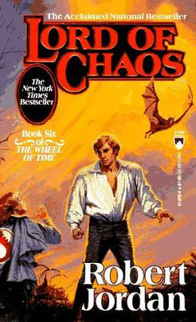
|
6. Lord of Chaos |
October 15, 1994 |
The deposed Queen of Andor, Morgase Trakand, goes to Amadicia for aid in returning to the throne; but is taken captive by the Lord Captain Commander of the Children of the Light, Pedron Niall. In response to amnesty on
male channelers by Rand al'Thor, Mazrim Taim swears allegiance to him, and is assigned to train Asha'man at the Black Tower. Rand is diplomatically courted by both the rebel Aes Sedai in Salidar, who send an envoy to
Caemlyn, and the Aes Sedai of the White Tower, who send an envoy to Cairhien. In Emond's Field, Perrin Aybara goes to Caemlyn to join Rand. Wrongly thinking the Salidar Aes Sedai few and cowed, Rand sends Mat Cauthon
to retrieve Elayne Trakand and win the allegiance of the rebel Aes Sedai. Mat discovers that Egwene al'Vere has been named the Amyrlin Seat of the rebel Aes Sedai; and when she sends Nynaeve al'Meara and Elayne to Ebou
Dar in Altara to search for a ter'angreal called the "Bowl of the Winds" to break the Dark One's control of the climate, Mat goes with them. Shortly after Perrin joins him, Rand is secretly kidnapped by Elaida's Aes
Sedai, who torture him en route to Tar Valon. Learning of the kidnapping, Perrin leads Rand's followers to the climactic Battle of Dumai's Wells. At the end of the battle, the rebel Aes Sedai are forced to swear fealty
to the Dragon Reborn while the surviving White Tower Aes Sedai remain captives.
|
|
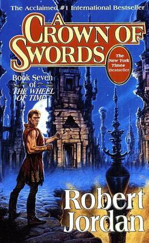
|
7. A Crown of Swords |
May 15, 1996 |
A Crown of Swords has three primary plotlines: Rand al'Thor, the Dragon Reborn, prepares to attack the Forsaken Sammael in Illian while enjoying life with his friend, Min Farshaw, and attempting to quell the rebellion by
nobles in Cairhien, during which Padan Fain severely injures him. After recovering, Rand, accompanied by Asha'man, defeats Sammael in Shadar Logoth, where Sammael is destroyed by Mashadar. Rand then takes the crown
of Illian: formerly the Laurel Crown, but now called the 'Crown of Swords'. Egwene al'Vere and Siuan Sanche attempt to manipulate the Aes Sedai in Salidar against Elaida's Aes Sedai in the White Tower. Investigating
Myrelle Berengari, Egwene exploits the transfer of Lan Mandragoran's Warder bond from Moiraine to Myrelle, to force Myrelle and Nisao to swear fealty to her. In the city of Ebou Dar in Altara, Elayne Trakand, Nynaeve
al'Meara, Aviendha, and Mat Cauthon search for a ter'angreal, the Bowl of the Winds, to break the unnatural heat brought by the Dark One's manipulation of climate. They find it and enlist the help of the Kin and the
Atha'an Miere. They also confront a Gholam. Mat is left behind and caught in the fighting as the Seanchan invade Ebou Dar.
|
|
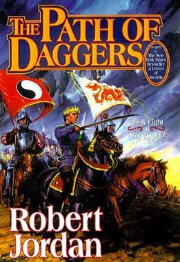
|
8. The Path of Daggers |
October 20, 1998 |
Elayne Trakand, Nynaeve al'Meara, Aviendha, and their coalition of channelers use the ter'angreal called the 'Bowl of the Winds' to reverse the unnatural heat brought by the Dark One's manipulation of the climate, and then
escape a Seanchan invasion by Traveling to Andor, where Elayne initiates her claim to the throne. Perrin Aybara moves into Ghealdan to stop Masema Dagar, the self-proclaimed Prophet of the Dragon; but unknowingly rescues
the deposed Queen Morgase of Andor from the Prophet's men. He then secures the oath of fealty from Alliandre, Queen of Ghealdan. At the end of the book, Faile Bashere is kidnapped by the Shaido Aiel. Egwene al'Vere,
Amyrlin Seat of the rebel Aes Sedai, manipulates her unruly followers into giving her more control, and they Travel to Tar Valon, before their siege of its White Tower. Rand al'Thor, with Asha'man and Illianers, attempts
to repel the Seanchan invasion in Altara. Though successful in early skirmishes, Rand loses control while wielding his sa'angreal 'Callandor', forcing a stalemate. Returning to Cairhien, Rand is attacked by traitorous
Asha'man led by Dashiva, who fail to kill him. Mat Cauthon is absent from the book, due to injuries sustained at the end of the previous book, A Crown of Swords. Robert Jordan had earlier done the same for Perrin Aybara,
who had been absent from Book 5, The Fires of Heaven.
|
|
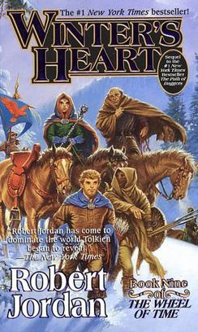
|
9. Winter's Heart |
November 7, 2000 |
Many of the events of Winter's Heart take place simultaneously with the events of the next book, Crossroads of Twilight. Perrin Aybara and his followers pursue the Shaido Aiel who kidnapped his wife, Faile Bashere, while
Elayne Trakand attempts to suppress rebellious nobles. Mat Cauthon is trapped in the city of Ebou Dar in Altara, under Seanchan occupation. His escape is disrupted by a Seanchan noblewoman named Tuon, the heir to the
Seanchan Crystal Throne; and Mat, having heard a prophecy of his own marriage to the Daughter of the Nine Moons, referring to Tuon herself, kidnaps her. Rand al'Thor is appointed a Warder by Elayne Trakand, Aviendha,
and Min Farshaw; and later kills most of the Asha'man traitors in Far Madding. Lan also kills Toram Riatin in a duel. Caught by guards, he is imprisoned for a short time but is set free by Cadsuane and the other Aes
Sedai. Rand and Nynaeve al'Meara Travel to Shadar Logoth. There, defended by Cadsuane Melaidhrin's Aes Sedai and loyal Asha'man against the Forsaken, Rand and Nynaeve use the Choedan Kal to cleanse saidin of the Dark
One's influence. In the process, both Shadar Logoth and the access key to the female Choedan Kal are destroyed.
|
|
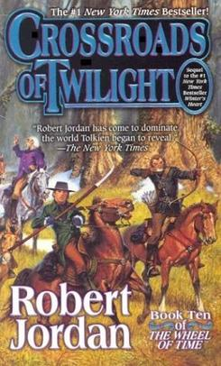
|
10. Crossroads of Twilight |
January 7, 2003 |
Perrin Aybara continues trying to rescue his wife Faile Bashere, kidnapped by the Shaido Aiel, even torturing prisoners for information. In addition, Perrin is approached with the suggestion of alliance with the Seanchan
to defeat the Shaido. Mat Cauthon continues trying to escape Seanchan territory while courting Tuon, the heir to the Seanchan leadership. In the process, Mat discovers that Tuon is a sul'dam and can be taught to channel
the One Power. Elayne Trakand continues trying to solidify her hold on the Lion Throne of Andor. It is revealed that she is expecting twins; but the identity of the father (Rand) is kept secret from others. Rand al'Thor
sends Davram Bashere, Logain Ablar, and Loial to negotiate a truce with the Seanchan. They return at the end of the book to tell him that the Seanchan have accepted the truce, but demand the presence of the Dragon Reborn
to meet with the Daughter of the Nine Moons. Egwene leads the siege of Tar Valon; but is kidnapped by agents of the White Tower after successfully blocking its River Port.
|
|
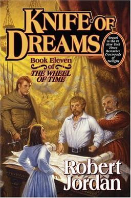
|
11. Knife of Dreams |
October 11, 2005 |
This volume of The Wheel of Time depicts several distinct plots. Unusual Trolloc attacks, the dead walking, ripples in the fabric of the world and other events seem to indicate that the Last Battle is drawing near; several
characters using different evidence confidently state that Tarmon Gai'don is close at hand.
|
|
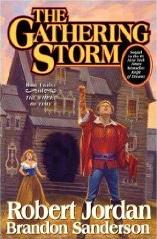
|
12. The Gathering Storm |
October 27, 2009 |
The series' storyline has been leading up to the "Last Battle" (Tarmon Gai'don)—a fight between the forces of Light and Shadow. According to prophecy in the series the primary protagonist Rand al'Thor, as the Dragon Reborn,
will "fight the [battle]", and must be present for the forces of Light to have a chance at winning and stopping the being known as the Dark One, the primary antagonist, from escaping his prison. The Gathering Storm
follows many plot threads but focuses on two characters, Rand al'Thor and Egwene al'Vere. While it follows al'Thor's attempts to unite and rally the world's forces for the Last Battle, it also addresses his struggle
with his sanity, caused by the corruption of his mind from the use of the male half of the One Power. The unification of the White Tower, the headquarters of the female users of the One Power known as Aes Sedai, is
addressed from al'Vere's perspective, as well as the exposure of the Black Ajah, a secretive and opposing faction within the story. While the stories of other main characters such as Perrin Aybara and Mat Cauthon are
briefly touched upon, they have little bearing on the main plot line. Some main characters such as Elayne Trakand and Lan Mandragoran do not appear at all, but are referred to.
|
|
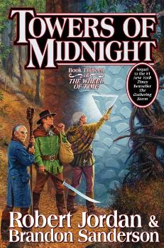
|
13. Towers of Midnight |
November 2, 2010 |
The Last Battle has started. The seals on the Dark One’s prison are crumbling. The Pattern itself is unraveling, and the armies of the Shadow have begun to boil out of the Blight. The sun has begun to set upon the Third
Age. Perrin Aybara is now hunted by specters from his past: Whitecloaks, a slayer of wolves, and the responsibilities of leadership. All the while, an unseen foe is slowly pulling a noose tight around his neck. To prevail,
he must seek answers in the wolf dream and find a way, at long last, to master the wolf within him or lose himself to it forever. Meanwhile, Matrim Cauthon prepares for the most difficult challenge of his life. The
creatures beyond the stone gateways, the Aelfinn and the Eelfinn, have confused him, taunted him, and left him hanged, his memory stuffed with bits and pieces of other men’s lives. He had hoped that his last confrontation
with them would be the end of it, but the Wheel weaves as the Wheel wills. The time is coming when he will again have to dance with the Snakes and the Foxes, playing a game that cannot be won. The Tower of Ghenjei awaits,
and its secrets will reveal the fate of a friend long lost.
|
|
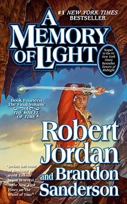
|
14. A Memory of Light |
January 8, 2013 |
Rand al'Thor, the Dragon Reborn, leads the nations into the Last Battle with the Dark One to save the world from his dark forces once and for all. The time of the Last Battle is upon the world as the Third Age is days from
coming to an end. The nations of the world have traveled to the Field of Merrilor, the border to the Blight, a Wasteland that houses the Dark One's prison in an effort to make plans for the oncoming battle. Rand al'Thor,
the Destroyer of the Dark One, also known as the Dragon Reborn, continues to make plans to meet with the heads of the nations in an attempt to convince them of his plan to destroy the remaining seals of the Dark One's
prison and replace them with new ones that will ensure the Dark One can never break free.
|